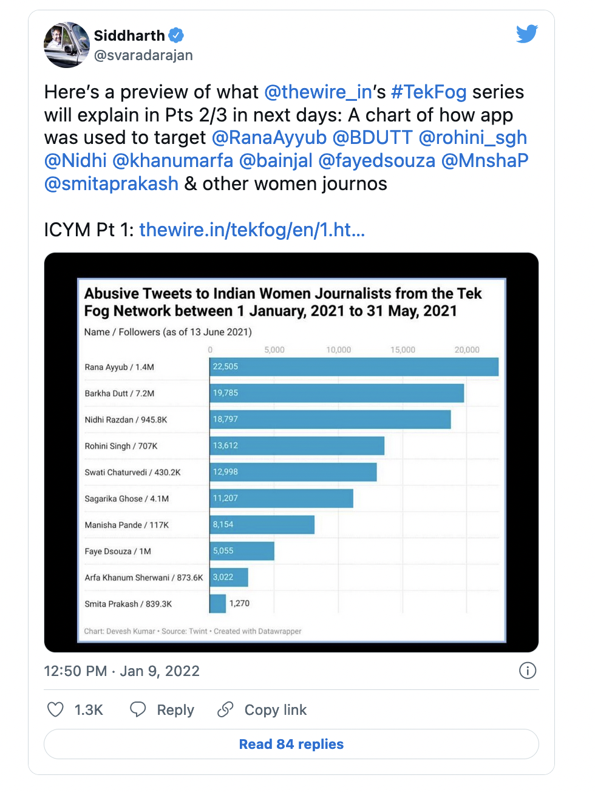

The Wire’s TekFog investigation: A futile search for evidence
| 15 January, 2022
This story was originally published in my fortnightly deep-dive newsletter, The Interval. You can read more about it here.
TLDR: The Wire’s recent three-part investigation into a secret BJP app called TekFog raised great concerns about a powerful tool that hijacks social media and targets thousands with a click of a button. But a closer look at the evidence reveals glaring holes. What we have, in fact, is a grab-bag of possibly interesting leads and great leaps of extrapolation held together by ‘confirmation bias’. The failures in this reporting—despite best intentions—point to a critical, underlying problem with Indian journalism today. It’s a 20-minute read.
“Did you read the ‘Tek Fog’ story?” a friend texted me on the evening of January 6. “It’s insane. Looks like the BJP has hacked all of social media.”
I did. It was electrifying. A two-year-long investigation by The Wire found that India’s ruling Bharatiya Janata Party has access to a secret app called ‘Tek Fog’ that automates hate: it can create and delete social media accounts on the fly, compromise WhatsApp to send unauthorised messages, hijack online conversations, use a vast citizen database for targeted harassment, and more. Two private tech companies were complicit in enabling this operation.
The investigation was based on information shared by a whistleblower followed by open-source investigative techniques to conduct an extensive forensic analysis.
Twitterati were outraged and politicians noticed. TMC Rajya Sabha MP Derek O’Brien said the use of Tek Fog “has serious ramifications and could jeopardise national security.” A parliamentary panel headed by Congress leader Anand Sharma has sought a response on Tek Fog from the Home Ministry.
NDTV’s Ravish Kumar amplified the findings of The Wire on national television. “Just press one button and thousands of accounts will start posting fake hashtags or retweet other hashtags and replies start coming,” he told his millions of loyal viewers.

I read the story, and then I read it again, and again, and I was baffled. I have covered online propaganda and reported on BJP’s organised disinformation machinery. And yet, I remained uneasy and unconvinced. The story had glaring holes.
I called my friends to see if I was missing something and learnt that most readers could not understand the story.
“I have literally no idea what is going on [in the story] and I’m allegedly a tech reporter,” one journalist said. “I don’t understand a lot of technology,” another friend said. “I thought maybe I don’t know enough.”
Some part of this general bemusement is understandable. The story is written by two technology researchers — Ayushman Kaul is an independent security and intelligence analyst and Devesh Kumar is an engineer and data analyst who now does product work at The Wire — and it is stuffed to the brim with technical language, data and charts, all of which is difficult for most laypersons to grasp.
But all that jargon also serves to obscure a single unpalatable fact: There is simply not enough evidence in this reporting to prove its far-reaching claims.
The three-part series (one, two, three) had the potential to be a “high-quality investigative tech-journalism” as one reporter called it on Twitter. But the proof required is missing in this pudding, or more accurately, this khichdi.
What we get instead is a grab-bag of possibly interesting leads and great leaps of extrapolation held together by ‘confirmation bias’. All it proves is that liberals are all too eager to believe that an all-powerful BJP has developed powerful technology to destroy democracy — and merely need assurance that it is indeed so.
I discussed my concerns with other journalists and interviewed the writers of the Tek Fog article. In an hour-long Zoom call, the two authors patiently answered my questions. They were honest and transparent about their methods. They were clear about what they know and don’t know. They did not invest two years to do a hit job. They have excellent skills and they believe this is an important problem to understand.
So what went wrong? I am convinced: The Wire has committed a classic journalistic sin of overreach.
The publication of this story illustrates the unspoken problem in Indian journalism. The big media with money and resources shies away from hard-hitting reporting. Independent outlets like The Wire emerged to fill that gap. They serve an important role, have the right intent, and they are not fabulists: they don’t make things up. But good intentions don’t always make for good journalism.
In today’s edition of The Interval, I will explore three big claims made by The Wire in the ‘Tek Fog’ story and point you to the evidence they have used to reach their conclusion. Each one falls apart on closer scrutiny. But you can and should decide for yourself.
I. If something is too bad to be true, it probably is
Let’s start with the most outlandish claim: Tek Fog allows its users to “leave no trace behind”. Its users can delete their social media accounts at a moment’s notice.
Think about what it means. Deactivating or deleting a Facebook account is irritating. They ask for a reason to quit. They give reasons to not quit. They ask for a password. Something like that. But The Wire is saying that BJP can do all of that by clicking one button in their secret app.
They can also create social media accounts on the fly. They can activate phone numbers and bypass email and OTP verification. One-click solution.
This is hard to believe. But look, anything is possible. Maybe their developers are exploiting an unknown bug.
So how does The Wire make thisclaim?
Have they used the app? No.
Did their source — a disgruntled employee of BJP IT Cell who supposedly used the Tek Fog app to spew hate — demonstrate the creation and deletion of accounts? No.
Do they have an explanation of how this might be happening? No.
Then?
Their source sent them screenshots of the app. One lists account creation and deletion as a feature. Not a single recording of their phone screen to show The Wire how it works. So all we have is the static suggestion of a potential functionality.
Despite underlining this capability — “no trace left behind” is listed as one of Tek Fog’s four “alarming” features — even The Wire admits it could not independently verify its existence.
So we should believe the BJP has an app that can break the security measures of the world’s biggest social media giants to protect their platforms because of a screenshot of an app that no one at The Wire has actually used.
So why make that claim?
I asked the authors to explain: “We added this without verification for the sake of completeness,” Devesh, who co-wrote the article told me. “One of the features we have verified was how a large number of accounts were tweeting to trend hashtags. If we did not add the part where the Tek Fog app can create or manage multiple accounts, then a lot of people would have questioned how they are doing this? How are thousands of accounts coming on a single app?”
This is circular reasoning. Because The Wire does not have hard evidence that thousands of accounts were sending out tweets from this secret app. In fact, as Devesh made it plain to me, Tek Fog is not just one app: it’s a concept, it’s a “metaworld”. Let me explain.
II. Hijacking Twitter: Show, don’t tell!
The Wire claims that the app is used to hijack the ‘trending’ section of Twitter and Facebook. This feature is used to “amplify right-wing propaganda, exposing this content to a more diverse audience on the platform, making extremist narratives and political campaigns appear more popular than they actually are.”
Good news stories provide context. It helps readers understand the significance of what’s new. The Wire offers none. Here are three things you should know to make sense of Twitter hijacking claims (more on that in a bit).
One: “Automation” in itself is no big deal. College kids make good-for-nothing Twitter bots in every hackathon. “Auto-retweet” or “auto-reply” are simple features — not bugs or hacks. Don’t jump off your seats when you hear these terms.
Two:Twitter trends suck. They are prone to manipulation. They are fake and meaningless. We have known this for years.
Three: BJP is the best in this game. They coordinate mass Twitter postings through WhatsApp groups. Content is shared on Google docs. Hundreds of nationwide trends were manufactured throughout the 2019 election. No Tek Fog required.
Making sense of Tek Fog
Now consider two questions about Tek Fog within this context.
Q1: The BJP already has sophisticated online machinery. What value is Tek Fog adding and how?
Q2: How big is this TekFog project? Is this an experiment, an outpost in the vast empire that is the BJP online machinery or is it “the backbone” of this machinery, as The Wireclaims?
Let’s look for the answers in the story.
First question. Why is TekFog a game-changer for BJP’s online strategy?
According to The Wire investigation, Tek Fog matters because it makes widespread and vicious trolling as easy as hitting a button. The app has automated multiple steps — from fetching abusive tweets to finding targets and posting them — in a centralised platform. One user can manage thousands of accounts. Mass coordination is not needed: the app does everything. Everyone should be concerned if this is happening at scale.
This is possible because the app has an inbuilt database of private citizens, which it links to a Google sheet with abusive tweets and a single user can post them using thousands of accounts. That is the claim.
But the story offers no solid evidence to show this powerful tool exists.
Look at the proof offered for the claim that the app has personal data — including physical attributes like skin tone and breast size — of private citizens which is used for targeted harassment.
How do the authors know this dataset exists? Screenshots.
Screenshots of the database with a few names? No. Screenshots that merely list groups: “female reporters”, “based on religion” and so on.

What is in there? They don’t know.
They have not seen names or details of even one person in this dataset. Even their key source can’t see the names in the database. Why is that?
“This layer of abstraction is added to make the app private and not screw up with the user’s brain,” Devesh told me. “This is good for the app operator’s mental health so that they don’t get to know if they are trolling the people they like. Hiding their names makes manipulation easy.”
Umm, okay. They say this database is “extensive”. So do they know the total number of people in there? No.
Okay, so what is the content in the Google Sheets? They haven’t seen it so they don’t know.
They don’t know anything specific about the features that make the app significant.
Ok, so The Wire acknowledges these problems and did a large-scale social media analysis to “independently verify” the damning screenshots.
Let’s look at what that analysis yields.
Second question: How big is Tek Fog?
There is one data point in the story that shows the scale of usage. Here is what the reporters did: A list of 280 of the most retweeted Indian women journalists was manually and independently selected and curated by The Wire. To be clear: They came up with this list themselves–and not based on anything the whistleblower shared. Millions of replies to these women over a period of four months were parsed.
Their conclusion: 18% of these tweets originated from Tek Fog. Many of them were abusive.
If this is true, it is big. If we take the replies to women journalists as a proxy for India’s political Twitter, this analysis suggests that Tek Fog is single-handedly contributing to one-fifth of the narrative.
When I first read these claims, I was blown away. What the hell is Twitter doing? Millions of abusive tweets are originating from one app and they haven’t blocked it?
But then I wondered why the stories did not include a crucial detail: the total number of Twitter accounts managed by Tek Fog.
If they identified close to a million tweets originating from the app, they should at least have the total number and a list of Tekfog’s accounts.
So how many total Twitter accounts does Tekfog handle–and which ones? The answer: They don’t know.
So, how did they conclude that 18% of all replies to women reporters came from accounts managed by Tek Fog if they don’t know which accounts were managed by Tek Fog? How did they arrive at the 18% number and this viral bar chart?

Let’s look at that. All that The Wire had was a list of 32 Twitter accounts provided by their whistleblower — yes, only thirty-two — and around 100 hashtags that the source said were made to trend using Tek Fog.
Starting with these two bits of information, the authors mapped out the size of this operation. But to do that, they made a series of assumptions–which led them to tag 102,000 Twitter accounts they believe may be managed by Tek Fog.
So how did they go from 32 Twitter accounts and a hundred hashtags to 102,000 accounts? What accounts did they include? Here are the examples their reporters offered :
Accounts that were following or being followed by these 32 accounts.
Accounts that tweeted those 100 hashtags.
They added a “temporal” filter: “account creation date, posting patterns and levels of engagement” to identify suspicious (not human-like) accounts
The authors told me both of them have done large scale social media analysis in the past (see this and this) and their assumptions are watertight. “We are not looking at just one dataset. We are looking at the time of the tweet, the content of the tweet, language similarity, following networks,” Devesh told me.
Researchers can have an hours-long technical debate about these assumptions. But know what? We don’t need to. Forget the specifics of their algorithm. Just think intuitively.
Let’s assume that a group of a thousand BJP volunteers who don’t use TekFog also got the same Google Sheet with tweets for a planned campaign. We already know such documents circulate among IT cell cadres and the vast informal network of BJP supporters. And they start tweeting at the same time at a very high frequency. All of these thousand accounts, in The Wire’s analysis, could be counted as Tek Fog accounts. But they could just as easily be bots or humans employed by the IT cell.
Devesh told me it is unlikely because they won’t exhibit “suspicious” bot-like behaviour. Okay sure. How about this: a nineteen-year-old programmer who passionately believes that only Narendra Modi can make his life better writes a simple bot to tweet out the same content, using the same hashtags. What about him?
I called Devesh yesterday after they published their third story for clarification on how they categorise something as ‘Tek Fog’ activity, and his response stunned me.
“Yes, we thought about that. Let’s say there is another app for tweeting out content….but if the work [social media manipulation] is the same, and it is happening in the same network [same hashtags, same targets], then it can also be counted as Tek Fog.”
“Wait, I am confused. Tek Fog is one app, right” I asked.
Not really, he said. “Tek Fog is basically an assimilation of all the coding related things that are resulting in social media manipulation,” Devesh told me.
“So Tek Fog is not one app?” I asked. Here’s what Devesh said:
“Tek Fog is an app. But it’s different. For example, Facebook is one app and it’s identity can’t be changed. It doesn’t have different versions. Everyone has the same version. Tek Fog is not like this. It has multiple teams. Some teams have Twitter trending features. Some have tasker features. Some have it by the name of Tek Fog. Others have it with a different name. This is what the source has told us. We don’t have a way to verify this. That’s why I am saying if someone is tweeting from an app, but a different app, then why don’t we consider it Tek Fog only? That’s my question.”

I was so confused by then. “Hmm, I am just trying to understand what Tek Fog is. So are we talking about a concept here? Like, whatever different things are happening, its unified version is Tek Fog?” I asked.
“Yeah. It’s a cliche thing to say but it’s like metaworld. It has different variants which different people are using. We can’t verify them. What we have verified is one variant of Tek Fog,” Devesh said.
Like Omicron versus Delta? Huh? I leave it to you to decipher for yourself what this means.
All I want to say is this: In my view, the sweeping “metaworld” assumptions which form the basis of The Wire’s “independent verification” — and is central to their big claim of exposing this “industrial scale propaganda operation” — don’t make any sense to me. And I have a tech degree.
So let’s review: The Wire has no evidence that any of the fancy Tek Fog features exist. It has no evidence that one-click mass trolling exists. It has no hard evidence that the database of private citizens with granular details exists. It has no data — only overly broad assumptions – that points to the scale of its usage.
And yet, we are all talking about a single app called Tek Fog that has single-handedly subverted “public discourse in the world’s largest democracy.”

I am not saying such an app can’t exist. Does the BJP have the money to invest resources to build this? Yes. Would they want it? Yes. Would they use it to harass its critics? Totally. But The Wire’s story has no hard evidence to prove any of this.
III. ShareChat: Extraordinary claims require extraordinary evidence
Back in 2018, when I started reporting on technology and politics, I saw problematic content on ShareChat, India’s largest regional language social media platform with around 250 million users. I nudged journalists writing on Facebook misinformation to look at ShareChat and its competitors.
I wanted someone else to report this story because this company was born in front of me: the startup’s CEO is my college batchmate and I was at the hackathon where the three founders started building things together.
But no one did. The company only got celebratory press coverage. So I did the story. In November 2018, ShareChat was on the front page of the Hindustan Times: “Fake news and hate speech thrive on regional language social media.”
And yet, I was astounded when The Wire called ShareChat a partner-in-crime in creating this alleged hate machine. Their investigation offers no such proof. It includes hints of some kind of connection, but no more.
Again, this needs context. Broadly, there are two types of stories criticising social media platforms for their content.
1. “Platform is not doing enough”: Feeds have bad content and the company is not doing enough to clean it. Bad actors are exploiting the platform for ends that are not good for society and the platform doesn’t care. In response, companies will say their critics don’t understand how content moderation works. Every platform has this problem and they are doing the best they can. It runs like a script.
This story can be written for and has been written for every social media platform. The ShareChat story I wrote for the HTis an example.
2. “Active Partner”: Platform is an active colluder with a bad actor or its policies are promoting one group over the other. They are giving them privileged access to technical tools or insidery insight and data to gain an advantage over rivals.
This one is more serious and goes beyond tech. The Wall Street Journal’s big break on Facebook last year which revealed that Ankhi Das, the company’s top public-policy executive had opposed applying hate-speech rules to a BJP politician, is an example. Das stepped down following the criticism.
The burden of proof is higher in the “active partner” case. This is why the first set of stories are everywhere and the second set is in short supply.
So what does The Wire have to say about ShareChat being a possible partner?
One, financial transaction: The source — the whistleblower who supposedly used the Tek Fog app — shared a payslip and a bank statement where ShareChat’s parent company “Mohalla Tech” showed up.
A bank statement and payslip sent by them surprisingly listed the involvement of two private companies, Persistent Systems and Mohalla Tech Pvt. Ltd. as their ‘employer’ and ‘assigned client’,” respectively. Money was exchanged between ShareChat and their source. Interesting.
But the source shared it on a condition that it not be made public. So The Wire gives us no details. No date. No sense of what kind of amount we are talking about: one hundred rupees or one lakh.
We also don’t know what the term “assigned client” means — and if this payment was specifically made in connection with TekFog. Nothing. As readers, we are supposed to just accept the fact that this piece of paper exists — and that it is authentic, and that it proves something damning.
The story has no other evidence that money was exchanged. In leading global newsrooms, an editor would not have allowed any mention of the bank payment without establishing a direct link between ShareChat and Tekfog.
Now look, I understand that proving financial transactions is hard. I have dropped stories because I failed to do so. So does The Wire have anything else to show ShareChat’s direct involvement?
They do.
Second: cyber forensics
They found that a ShareChat URL — “metabase.sharechat.com” — was interacting with the server of Tek Fog.
Simply put, it means that some service of ShareChat is interacting with the Tek Fog app. This matters, according to The Wire, because Tek Fog is a private app and has no open APIs. To establish a connection with it and exchange data would require the involvement of employees working at ShareChat.
The tech nerd in me got excited. They are onto something. No money trail? No problem. They have a digital trail. That’s a good strategy.
I would have loved to tell you more about this and explain what this means but I can’t. Because they don’t offer any more information on the significance of this URL. In fact, they also list a number of URLs of news organisations like Republic World, OpIndia, ABP News and Dainik Jagran, saying they raise “questions regarding the complicity of certain digital media outlets.” And then they move on. That’s it.
I discussed this with the authors. I pointed out that a number of common software tools like Google Analytics and Zoho also show up in the same list. So how can they say ShareChat’s name showing up is enough evidence to suggest its “direct involvement in the Tek Fog operation”?
Their answer: Because they can’t think of any reason why a ShareChat URL should be present on that list. I understand. But at least tell us what exactly it proves?
What is ShareChat doing via this connection with TekFog? Surely, Zoho (a utility tool), ShareChat (a social media platform) and Dainik Jagran (a news organisation) are not interacting with TekFog in the exact same way! The Wire does not have answers to any of these questions. All they have is a list of URLs.

Let’s move on. The Wire also points to data that offers “further insight” into ShareChat’s “connection to the broader operation.”
Third: Data Analysis
What do they prove with their large scale data analysis? They prove that users first post content on ShareChat and then on other platforms like Facebook and Twitter. Here’s the key claim in their own words:
“A script that compared the posts made by the accounts on Sharechat to those made by the same account on Facebook/Twitter was utilised revealing that 90% of the posts were common across the various platforms. Further review of the timestamps of these posts highlighted that these common posts were first uploaded on Sharechat before being migrated over to Twitter or Facebook.”
But this is hardly a smoking gun: it could just be their preferred sequence of posting. It reads like meaningless data.
The authors told me they did this analysis because their source mentioned that “the aim of the content being amplified first on ShareChat is to ensure it first goes viral with the audience of the target demographic and it is then migrated to other platforms” and they did this analysis to independently verify that claim.
“We didn’t make up this theory and then found the data to prove it. We were told that doing this analysis will reveal some patterns,” they said.
Okay, but all that tells us is that TekFog operators are more focused on ShareChat’s regional Tier 2/3 audiences, and Twitter’s Tier 1 demographic is secondary. Why is this surprising for any political party in India?
The next step was to use “various deep learning AI models” to analyse the tone and emotion of these posts, and 58% fell under the category of hate speech.
Look, ask any AI researcher: algorithms that require human judgement and discretion don’t do a good job. There is a reason why AI tools built by big tech companies to weed out misinformation are not enough and human content moderators are needed. The bigger irony: most BJP critics will think the 58% number is far too low. If and when The Wire releases this data to the public, you can see for yourself.
But let’s assume they are right and review what we’ve learned here: The operatives share hateful content across social media platforms using TekFog, and they first do it on ShareChat. How does this establish ShareChat as an active partner?
When I pushed the authors to explain, they said:
Specifically, Devesh clarified:
“If you read the piece, we are more certain about Persistent Systems, and we are directly naming them, but for ShareChat, we are going in the direction that it feels like they are directly involved, but it might be a possibility that their platform is used by Tek Fog operators to do this and the company is not aware of this or not taking action. It is possible that they don’t know this and their platform is being misused.”
What? ShareChat is clearly listed as one of the three companies that form “the corporate-technical nexus behind Tek Fog.”
And it’s not just my “misinterpretation.” While demanding a Supreme Court intervention on Tek Fog, the Delhi Union of Journalists wrote that ShareChat was “reportedly responsible for developing the [Tek Fog] app.”
Is it possible that ShareChat is in bed with the BJP? Yes, anything is possible. But the job of a reporter is to go out and find the facts to show the exact nature of that relationship. And then come back and double-check every bit of information.
The adage in journalism regarding verification is: “If your mother says she loves you, check it out.”
IV. The only big scoop
The only thing that matters in the whole Tek Fog investigation is the “WhatsApp hijack”. That is the only solid scoop The Wire has.
This is what they have uncovered: The TekFog operatives first infect targeted phones with malware. When their WhatsApp account becomes inactive for whatever reason, they hijack that account and send out messages to its contacts.
The whistleblower was able to demonstrate how this works with the phone of the reporter–whose phone had been hacked back in 2020, and whose number was already with TekFog. The source even shared a video capture, but* The Wire *was “unable to independently verify the precise mechanism through which Tek Fog is able to compromise WhatsApp accounts.”
This is a massive and frightening breach of user privacy, and identity theft to boot.
V. Conclusion
Most tech journalism is bad because reporters don’t care to understand technology. This was not the case here. The investigation has holes because even though the authors understand technology, they are not trained reporters.
A story of this size and significance needs close editorial guidance and, importantly, tech expertise to ensure that the reporting adhered to journalistic standards of evidence. In any leading global newsroom, be it the New York Times or BBC News, the reporters would also have access to extensive resources and area-specific editorial talent. There would simply have been more support for these reporters.
In India, those who have the deepest pockets have the least appetite for investigations of this kind. And that is the true tragedy at the heart of this so-called exposé. The Wire can do far better, but this is as good as it gets in a country where independent high-quality journalism is continually scrambling for funding.
This paucity of resources becomes all the more glaring in a story that centres on technology. Bad actors today use sophisticated and complex tools that are difficult to detect and hard to prove. Newsrooms need ever-increasing money and expertise just to keep up. So it isn’t surprising that we end up with a poorly evidenced and reported investigation like this.
The final irony: Underfunded independent newsrooms are under constant pressure to publish big ‘scoops’ to attract and retain support. The result is a less-than-virtuous cycle that bodes ill for Indian journalists and journalism.